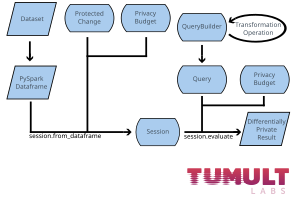

API Reference#
Tumult Analytics is a differentially private analytics library from Tumult Labs.
The library is broken up into a number of modules that enable complex differentially
private queries to be defined and run. A typical workflow is for users to instantiate
PySpark and read in their data; create a Session object with
private datasets, their corresponding privacy protection, and a privacy budget; define
differentially private queries using a QueryBuilder object,
and then evaluating these queries with evaluate().
For specifying privacy guarantees:
sessiondefines theSession, an interactive interface for evaluating differentially private queries.privacy_budgetcontains types for representing privacy budgets.protected_changecontains types for expressing what changes in input tables are protected by differential privacy.
For defining queries:
query_builderprovides an interface for constructing differentially private queries from basic query operations.keysetdefinesKeySet, a type for specifying the keys used in group-by operations.constraintscontains types for representing constraints used when evaluating queries on data with theAddRowsWithIDprotected change.truncation_strategyandbinning_specprovide types that are used to define certain types of queries.
For evaluating error:
programprovides an interface for defining a particular differentially private computation as a reusable program object.tunerprovides an interface for evaluating and tuning the error of a program.metricsdefines a collection of metrics which can be used as part of the tuning process.
Modules#
A BinningSpec defines a binning operation on a column. |
|
Configuration for Tumult Analytics. |
|
Defines |
|
A KeySet specifies a list of values for one or more columns. |
|
|
|
|
|
Classes for specifying privacy budgets. |
|
|
|
Types for programmatically specifying what changes in input tables are protected. |
|
An API for building differentially private queries from basic operations. |
|
Interactive query evaluation using a differential privacy framework. |
|
Tumult Synthetics is a differentially private synthetic data generator built on Tumult Analytics. |
|
Defines strategies for performing truncation in private joins. |
|
|
|
Utility functions. |
Exceptions#
- exception AnalyticsInternalError(message)#
Bases:
AssertionErrorGeneric error to raise for internal analytics errors.
- Parameters:
message (str)
This diagram shows the basic workflow for most Analytics operations. (Click to see full-size image.)
{kind=link}
